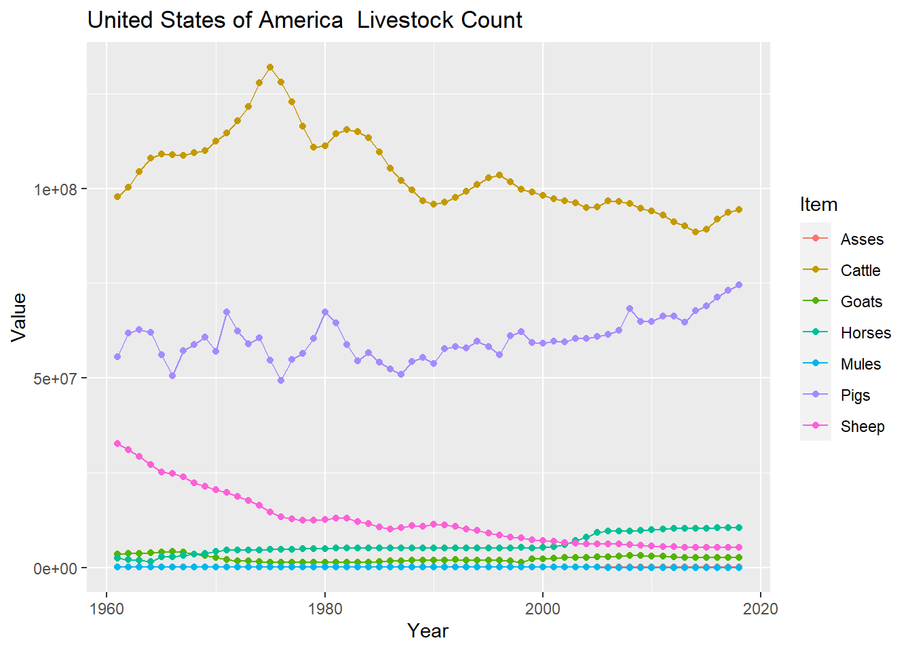

Code
library(dplyr)
library(tidyverse)
library(summarytools)
knitr::opts_chunk$set(echo = TRUE, warning=FALSE, message=FALSE)library(dplyr)
library(tidyverse)
library(summarytools)
knitr::opts_chunk$set(echo = TRUE, warning=FALSE, message=FALSE)Reading in Data and Providing Summary Statistics
The data set I have read in is FAOSTAT_livestock.csv⭐⭐⭐
dataset <- data.frame()
dataset <- read.csv(file = '_data/FAOSTAT_livestock.csv', header = TRUE)This data is livestock counts collected from 1961 to 2018 on 253 different countries and regions. The different livestock counted are: asses, camels, cattle, goats, horses, mules, sheep, buffaloes, pigs. it includes extraneous information such as flags for how the data was collected as well as codes for each of the areas and animals which are already represented in their own column.
dataset <- dataset %>% select(-Domain.Code,-Domain,-Area.Code,-Flag,-Flag.Description,-Year.Code,-Item.Code, -Element.Code,-Element,-Unit)
print(dfSummary(dataset))Data Frame Summary
dataset
Dimensions: 82116 x 4
Duplicates: 0
-----------------------------------------------------------------------------------------------------------------------
No Variable Stats / Values Freqs (% of Valid) Graph Valid Missing
---- ------------- --------------------------------- ----------------------- --------------------- ---------- ---------
1 Area 1. Africa 522 ( 0.6%) 82116 0
[character] 2. Asia 522 ( 0.6%) (100.0%) (0.0%)
3. China, mainland 522 ( 0.6%)
4. Eastern Africa 522 ( 0.6%)
5. Eastern Asia 522 ( 0.6%)
6. Eastern Europe 522 ( 0.6%)
7. Egypt 522 ( 0.6%)
8. Europe 522 ( 0.6%)
9. India 522 ( 0.6%)
10. Northern Africa 522 ( 0.6%)
[ 243 others ] 76896 (93.6%) IIIIIIIIIIIIIIIIII
2 Item 1. Asses 8571 (10.4%) II 82116 0
[character] 2. Buffaloes 3505 ( 4.3%) (100.0%) (0.0%)
3. Camels 3265 ( 4.0%)
4. Cattle 13086 (15.9%) III
5. Goats 12498 (15.2%) III
6. Horses 11104 (13.5%) II
7. Mules 6153 ( 7.5%) I
8. Pigs 12015 (14.6%) II
9. Sheep 11919 (14.5%) II
3 Year Mean (sd) : 1990.4 (16.8) 58 distinct values . . . . : : : : 82116 0
[integer] min < med < max: : : : . : : : : : : (100.0%) (0.0%)
1961 < 1991 < 2018 : : : : : : : : : :
IQR (CV) : 29 (0) : : : : : : : : : :
: : : : : : : : : :
4 Value Mean (sd) : 11625569 (64779790) 43667 distinct values : 80815 1301
[integer] min < med < max: : (98.4%) (1.6%)
0 < 224667 < 1489744504 :
IQR (CV) : 2364200 (5.6) :
:
-----------------------------------------------------------------------------------------------------------------------#| label: summaryHere is the statistical data on each type of livestock in America and China giving their mean median standard deviation min and max as well as the year it occurred where applicable. There are also graphs over the years of each livestock in each country respectively. The stats and graphs were generalized to a single function inputting only the data set and country name.
mean_median <- function(Set_data,vector,name) {
men <- as.integer(mean(vector))
men <- str_pad(as.character(men), 10, 'right', ' ')
med <- median(vector)
med_year <- Set_data$Year[which.min(abs(vector - median(vector)))]
min <- min(vector)
min_year <- Set_data$Year[which.min(vector)]
max <- max(vector)
max_year <- Set_data$Year[which.max(vector)]
std <- as.integer(sd(vector))
cat(sprintf("For % s:\n The mean was % s \t\t\t The median was % s in % s \n The minimum was % s in % s \t\t The maximum was % s in % s \n the sd was % s \n\n",name,men,med,med_year,max,max_year,min,min_year,std))
}
All_animals <- function(Set_data,Place) {
less_tidy <- Set_data %>% group_by(Year,Area) %>% spread(Item, Value)
less_tidy <- subset(less_tidy, (Area == Place))
less_tidy[is.na(less_tidy)] <- 0
Set_data <- subset(Set_data, (Area == Place))
Set_data <- na.omit(Set_data)
type_animals <- unique(Set_data$Item)
cat(paste("Statistical Data on Livestock Counts in ",Place,"\n"))
if ("Asses" %in% type_animals) {mean_median(less_tidy,less_tidy$Asses,"Asses")}
if ("Buffaloes" %in% type_animals) {mean_median(less_tidy,less_tidy$Buffaloes,"Buffaloes")}
if ("Camels" %in% type_animals) {mean_median(less_tidy,less_tidy$Camels,"Camels")}
if ("Cattle" %in% type_animals) {mean_median(less_tidy,less_tidy$Cattle,"Cattle")}
if ("Goats" %in% type_animals) {mean_median(less_tidy,less_tidy$Goats,"Goats")}
if ("Horses" %in% type_animals) {mean_median(less_tidy,less_tidy$Horses,"Horses")}
if ("Mules" %in% type_animals) {mean_median(less_tidy,less_tidy$Mules,"Mules")}
if ("Pigs" %in% type_animals) {mean_median(less_tidy,less_tidy$Pigs,"Pigs")}
if ("Sheep" %in% type_animals) {mean_median(less_tidy,less_tidy$Sheep,"Sheep")}
ggplot(Set_data, aes(x=Year, y = Value, color=Item)) +
geom_line() + geom_point() + ggtitle(paste(Place, " Livestock Count"))
}
All_animals(dataset,"United States of America")Statistical Data on Livestock Counts in United States of America
For Asses:
The mean was 36584 The median was 51486.5 in 1992
The minimum was 55000 in 1989 The maximum was 15000 in 1961
the sd was 16347
For Cattle:
The mean was 103935237 The median was 100671304 in 1962
The minimum was 132028000 in 1975 The maximum was 88526000 in 2014
the sd was 10451951
For Goats:
The mean was 2348852 The median was 2275000 in 1999
The minimum was 4222000 in 1966 The maximum was 1270000 in 1976
the sd was 812402
For Horses:
The mean was 5936339 The median was 5109000 in 1984
The minimum was 10479246 in 2018 The maximum was 1502000 in 1964
the sd was 2557831
For Mules:
The mean was 20194 The median was 25500 in 1972
The minimum was 28000 in 1983 The maximum was 0 in 2006
the sd was 11153
For Pigs:
The mean was 60280175 The median was 59729550 in 1994
The minimum was 74550200 in 2018 The maximum was 49267008 in 1976
the sd was 5458071
For Sheep:
The mean was 12349025 The median was 10756500 in 1985
The minimum was 32725008 in 1961 The maximum was 5245000 in 2014
the sd was 7294372 
All_animals(dataset,"Canada")Statistical Data on Livestock Counts in Canada
For Cattle:
The mean was 12372263 The median was 12127000 in 1965
The minimum was 14925000 in 2005 The maximum was 10666600 in 1987
the sd was 1085359
For Goats:
The mean was 24276 The median was 26900 in 1989
The minimum was 30023 in 2016 The maximum was 12000 in 1961
the sd was 6156
For Horses:
The mean was 393856 The median was 385000 in 2000
The minimum was 555000 in 1961 The maximum was 343000 in 1973
the sd was 43696
For Mules:
The mean was 4000 The median was 4000 in 1961
The minimum was 4000 in 1961 The maximum was 4000 in 1961
the sd was 0
For Pigs:
The mean was 10167570 The median was 10553200 in 1985
The minimum was 15110000 in 2006 The maximum was 4993000 in 1963
the sd was 3150889
For Sheep:
The mean was 662855 The median was 628050 in 1991
The minimum was 994200 in 2004 The maximum was 385600 in 1969
the sd was 177300 
America and China have very different livestock counts a but both have one animal that is reared much more than the rest. For America the main livestock is cattle which counts peaked in 1975 and has been steadily declining since. The the second highest livestock reared in america is goats which has been raising year after year and was at its peak at the latest year with data available. In comparison the highest amount of pigs in america is approximately the same as the very minimum count of Pigs in China. The pig count has been exponentially been increasing until its peak in 2012. From this data it is apparent that pork is much more of a staple meat for people then it is for Americans whose staple meat is beef.